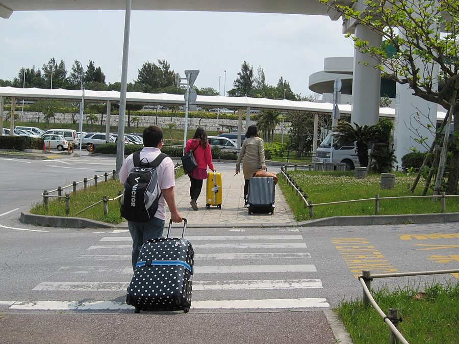
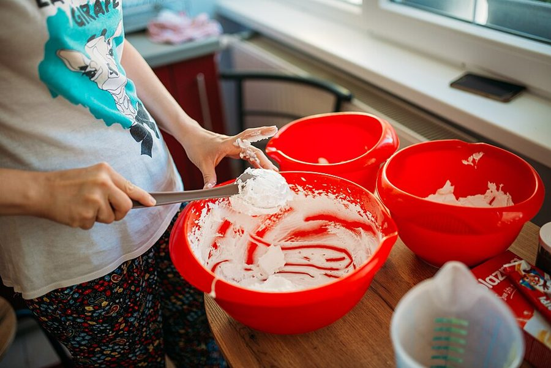
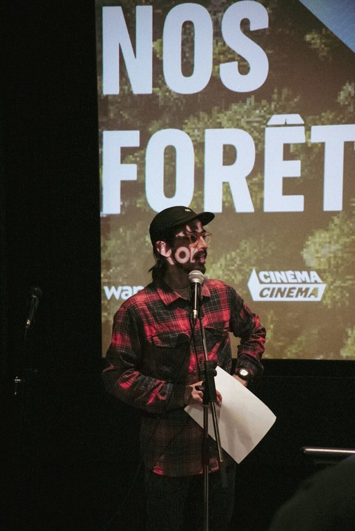
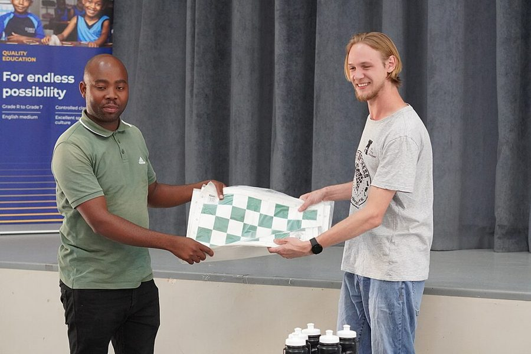
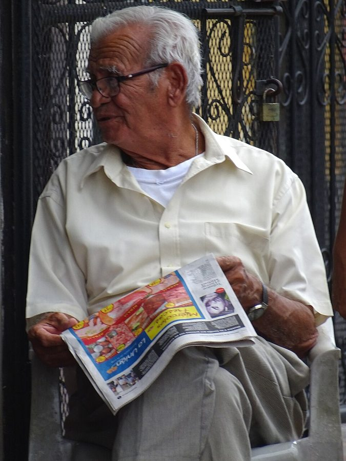
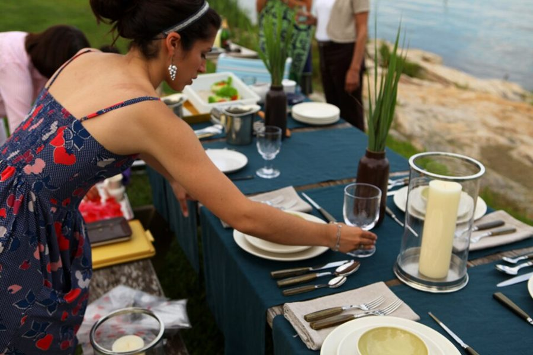
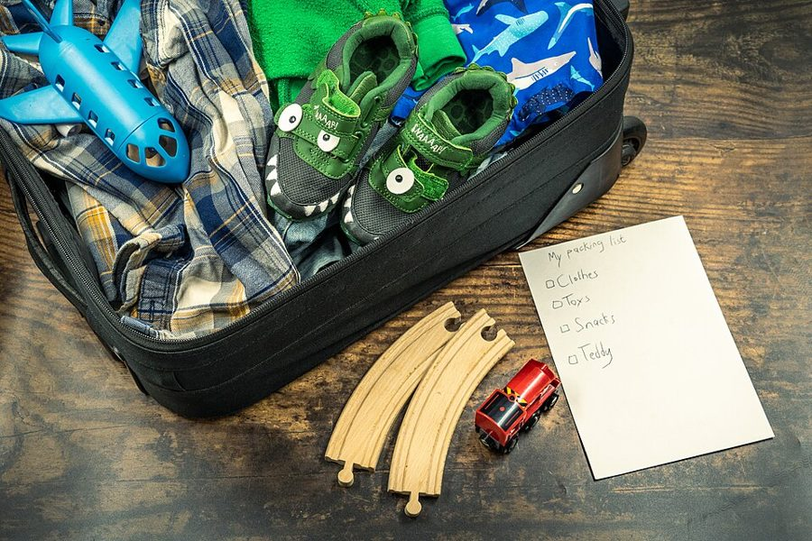
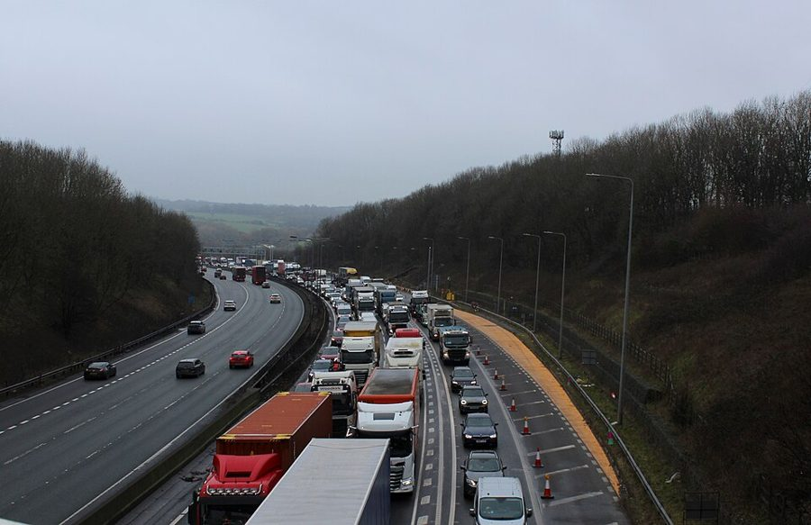

1. SER / IR
| eu | fui |
| você | foi |
| ele, ela | foi |
| a gente | foi |
| nós | fomos |
| vocês | foram |
| eles, elas | foram |
Complete with the correct form of ser or ir (or another verb in the pretérito perfeito).
- Eu ao médico ontem.
- A gente ao cinema depois da aula.
- Nós muito amigos na infância.
- Eles alunos da turma que se (formar) no ano 2000.
- Você à última reunião da empresa?
- Ela já ao Brasil?
2. TER
| eu | tive |
| você | teve |
| ele, ela | teve |
| a gente | teve |
| nós | tivemos |
| vocês | tiveram |
| eles, elas | tiveram |
- Eu muito trabalho esta semana e por isso não (estudar) nada.
- A gente sorte com o clima na viagem para o Nordeste.
- Nós uma boa conversa ontem.
- Eles um problema no voo.
- Você tempo para descansar?
- Ela um filho no ano passado.

3. FAZER
| eu | fiz |
| você | fez |
| ele, ela | fez |
| a gente | fez |
| nós | fizemos |
| vocês | fizeram |
| eles, elas | fizeram |
- Eu o relatório ontem à noite.
- A gente o possível para ajudar.
- Nós a reserva do hotel.
- Eles uma festa surpresa para a Ana.
- Você o pagamento da conta de luz?
- Ele um jantarzinho para os amigos no fim de semana e todos (gostar) tudo.

4. DIZER
| eu | disse |
| você | disse |
| ele, ela | disse |
| a gente | disse |
| nós | dissemos |
| vocês | disseram |
| eles, elas | disseram |
- Eu não nada sobre aquele assunto que conversamos anteriormente.
- A gente a verdade, mas ela não (acreditar).
- Nós que o prazo era curto para terminar o projeto.
- Eles que não podiam vir, assim não (organizar) nada.
- Você para ele o que (acontecer)?
- Ela me que estava chovendo em São Francisco.
5. PODER
| eu | pude |
| você | pôde |
| ele, ela | pôde |
| a gente | pôde |
| nós | pudemos |
| vocês | puderam |
| eles, elas | puderam |
- Ela dormir até tarde porque não (trabalhar) na segunda.
- A gente resolver tudo a tempo.
- Nós entrar na sala VIP porque (pagar) muito caro pelos ingressos.
- Eles não participar da reunião: (atrasar) e não entrar.
- Eu não encontrar o documento, não (ter) tempo de procurar.
- Você viajar no fim de semana?
6. TRAZER
| eu | trouxe |
| você | trouxe |
| ele, ela | trouxe |
| a gente | trouxe |
| nós | trouxemos |
| vocês | trouxeram |
| eles, elas | trouxeram |
- Eu os livros que você (pedir).
- A gente presentes para a equipe.
- Nós novidades do escritório de SP.
- Eles boas notícias.
- Você os documentos?
— sim, está tudo aqui.
7. VER
| eu | vi |
| você | viu |
| ele, ela | viu |
| a gente | viu |
| nós | vimos |
| vocês | viram |
| eles, elas | viram |
- Eu um filme interessante ontem à noite.
- A gente o nascer do sol na praia hoje de manhã.
- Nós o relatório ontem, mas nem (tocar) nele.
- Eles não o e-mail, vamos reenviar.
- Você o resultado da prova? (ser) muito difícil.
— Não . Você (tirar) uma boa nota na prova?
8. VIR
| eu | vim |
| você | veio |
| ele, ela | veio |
| a gente | veio |
| nós | viemos |
| vocês | vieram |
| eles, elas | vieram |
- Eu mais cedo porque (precisar) terminar o projeto. Agora está pronto!
- A gente de carro, mas eles de bike.
- Nós de ônibus para o centro.
- Eles para visitar os pais? — sim!
- Você para a aula ontem?
- Eles de bike e nós de carro e (chegar) antes, claro!

9. DAR
| eu | dei |
| você | deu |
| ele, ela | deu |
| a gente | deu |
| nós | demos |
| vocês | deram |
| eles, elas | deram |
- Eu um presente para ela, mas ela não me nada.
- A gente risada da situação.
- Nós o nosso melhor.
- Eles um jeito de resolver.
- Você a resposta correta?
— sim.
10. QUERER
| eu | quis |
| você | quis |
| ele, ela | quis |
| a gente | quis |
| nós | quisemos |
| vocês | quiseram |
| eles, elas | quiseram |
- Eu não ir à praia porque estava começando a chover.
- A gente aprender mais sobre o assunto.
- Nós fazer a reserva ontem, mas já estava lotado.
- Eles não esperar, uma pena porque não (poder) assistir ao jogo.
- Você viajar no fim de semana?
— sim e minha esposa ir junto.

11. SABER
| eu | soube |
| você | soube |
| ele, ela | soube |
| a gente | soube |
| nós | soubemos |
| vocês | souberam |
| eles, elas | souberam |
- Eu da notícia tarde demais. Não (ter) tempo de fazer nada.
- A gente o resultado hoje. (rodar) na prova!
- Nós que o evento foi cancelado.
- Eles do casamento na última hora porque não (ser) convidados.
- Você que ela se mudou?
— Não . Para onde ela foi? (ir) para Brasília.

12. PÔR
| eu | pus |
| você | pôs |
| ele, ela | pôs |
| a gente | pôs |
| nós | pusemos |
| vocês | puseram |
| eles, elas | puseram |
- Eu os papéis na gaveta.
- A gente a mesa para o jantar.
- Nós as malas no carro.
- Eles tudo no lugar. Que bom, já está tudo arrumado!
- Você o nome na lista?
— sim! Não me (esquecer)!

13. CABER
| eu | coube |
| você | coube |
| ele, ela | coube |
| a gente | coube |
| nós | coubemos |
| vocês | couberam |
| eles, elas | couberam |
- O sofá na sala, nós (ficar) felizes com isso.
- A gente não no carro.
- Todos na foto? Sim, todos.
- Eles não no elevador. (ter) que entrar no outro.
- Você na roupa antiga?
— Não , eu engordei, mas não muito.

14. HAVER
| uso impessoal | houve |
- um acidente na estrada.
- Ontem uma reunião importante.
- No evento poucas pessoas.
Prática contextual
Complete the text with the verbs in parentheses in the pretérito perfeito.
Na semana passada o trabalho (ser) intenso. Eu (ter) reuniões todos os dias e quase não (poder) descansar. Na segunda-feira, a gente (fazer) uma apresentação importante, e todos (dizer) que os resultados (ser) excelentes.
Na terça, nós (ver) que (haver) um erro no relatório, mas ainda (dar) tempo de corrigir. A gerente (trazer) os documentos revisados e (ficar) satisfeita.
Na quarta, o novo cliente (vir) conhecer a equipe. Eu (saber) disso só de manhã, mas nós (querer) causar uma boa impressão e (pôr) em ordem a sala de reuniões. Ele (dizer) que (ficar) impressionado com a organização.
No fim do dia, todos (ir) embora exaustos, mas felizes. A gente (sentir) que o esforço (valer) a pena e que tudo finalmente (dar) certo.